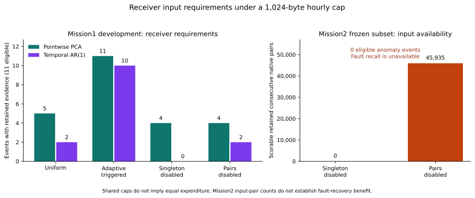

Research question
Limited storage and downlink capacity make telemetry retention a selection problem. A recorder has to decide which measurements to preserve before it knows which events will matter to a later investigation.
Uniform sampling provides broad coverage but can miss short events. Trigger-based capture can retain unusual measurements at low cost, while discarding the lead-up or behavior that its trigger does not recognize. Summary statistics reduce data volume but lose exact timestamps, sample order, or the original values.
My focus is preserving evidence under a byte budget: which original observations survive recording, whether a fixed downstream detector can still recognize event evidence, and how much surrounding context remains available.
The work uses archived spacecraft data and software replay. It is a research prototype, with no claim of onboard deployment or demonstrated physical fault diagnosis.
A causal recorder with reserved background coverage
The adaptive policy combines a bounded pre-trigger buffer, post-trigger capture, and a separate allocation for background sampling. Each component addresses a different way useful information can disappear:
- Pre-trigger capture preserves recent observations that were already in memory when a trigger fires, retaining part of the event’s lead-up.
- Post-trigger capture retains a configured number of subsequent observations, subject to the remaining budget.
- Background reservation allocates capacity to time-stratified samples selected independently of anomaly scores, providing coverage outside triggered intervals.
Capture decisions use only observations available at that point in the stream. Event annotations are never an input to the recorder, and future samples cannot change a finalized packet.
In the Mission1 study, the trigger uses the largest absolute first difference across the selected channels, normalized by training standard deviations. The threshold is six standard-deviation units; differences reset after gaps longer than 150 seconds. The recorder uses eight prior samples, four post-trigger samples, and a 20% background reservation rounded to whole records.
Each active reporting hour is a separate epoch with its own serialized-byte cap. Context and quotas reset at the epoch boundary, unused background capacity is not reclaimed, and capacity is not borrowed across epochs.
Packet format and budget enforcement
Every active reporting epoch emits a packet, including the header cost. A packet header uses 32 bytes. Each raw record uses 36 bytes: a four-byte prefix plus a timestamp and six binary32 measurement values. An extrema-summary record uses 64 bytes.
The encoder enforces 32 + 36 × raw records + 64 × summary records ≤ byte cap. At 1,024 bytes, a raw-only packet can contain at most 27 observation records.
Timestamps, record tags, and measurement values all count toward the cap. Production link framing, encryption, acknowledgements, and retransmissions are outside this experimental format.
Evaluation separates capture from downstream assessment
The Mission1 development study replays 3,248,700 original observations from 2008–2010. Calibration uses 8,713,221 eligible observations from before 2008, excluding annotated anomalies, rare events, and communication gaps in the selected channels.
I compare retention policies on the original synchronized observations, before aggregation or forward-fill. The study sweeps four hourly caps: 256, 512, 1,024, and 2,048 bytes. At each cap, every policy receives the same source stream and allowance. The experiment then evaluates what can actually be recovered from its encoded output:
- Causal captureSelect observations chronologically, without access to event annotations.
- Packet serializationWrite the selected records and account for the complete encoded stream.
- Decode and verifyCheck recovered timestamps and value bits against the original observations.
- Frozen-receiver evaluationMeasure event evidence and context using fixed downstream analysis.
The receivers include a training-reference deviation check and a three-component principal component analysis (PCA) residual detector, which scores departures from the learned low-dimensional reference. Each receiver flags scores strictly above the 0.999 quantile of its eligible training scores. Calibration remains unchanged across retention policies.
Capture and receiver scores differ, although they share training normalization. This evaluates whether retained measurements remain useful to a distinct analysis; it does not establish fully independent modeling assumptions.
Forward-filled values never count as retained raw evidence. Extrema summaries are assessed separately because a bucket’s minimum or maximum is not an original timestamped sample suitable for the same raw-observation receivers.
Mission1 results under a shared hourly cap
The comparison includes 11 eligible validation events. An event has retained PCA evidence when a saved original observation within its annotated interval still exceeds the frozen receiver’s threshold.
| Capture policy | Encoded data | Events with PCA evidence |
|---|---|---|
| Uniform sampling | 25.04 MiB | 5 / 11 |
| Reservoir sampling, ten seeds | 25.15 MiB mean | 5.1 / 11 mean |
| Randomized phase, ten seeds | 24.96 MiB mean | 5.4 / 11 mean |
| Threshold-only capture | 0.81 MiB | 10 / 11 |
| Adaptive recorder | 6.30 MiB | 11 / 11 |
The adaptive recorder preserved PCA evidence for all 11 events at about one-quarter of uniform sampling’s encoded cost in this configuration. Threshold-only capture used substantially fewer bytes, but missed one event and retained no pre-event context in the native pilot.
A shared cap does not mean equal actual expenditure. The table reports the data each policy chose to retain under the same hourly allowance. It should not be read as a comparison at a fixed total encoded size.

The seeded comparisons address sensitivity to sampling alignment. Reservoir runs retained evidence for 4–7 events; randomized-phase runs retained 4–8. Those ranges describe variation in sampling the same events, rather than confidence intervals for performance on new faults.
These are validation development results on one mission. Event evidence is a positive statistical score on an annotated observation, not a verified physical diagnosis or a measure of event precision. The previously examined Mission1 test split is excluded from these studies.
Normal-positive observations and interpretation limits
At the 1,024-byte cap, the frozen PCA receiver also scores 1,848 normal observations above threshold in the adaptive stream, compared with 6,708 for uniform sampling and 12,425 on the full archive.
These are observation counts, not deduplicated alarm episodes. The policies retain different numbers of normal observations, so these counts do not establish a controlled operational false-alarm rate.
Component ablations expose context loss
I ran paired component-removal experiments to separate the contribution of pre-trigger history, background reservation, and post-trigger capture.
Removing pre-trigger capture still preserves PCA evidence for 11/11 events, but reduces mean pre-event context coverage from 64.3% to 1.8%. Context coverage measures the fraction of available eligible source observations retained during the 300 seconds before each event’s original onset.
That distinction matters for evaluation: a policy can preserve a point of detectable evidence while losing nearly all of the preceding trajectory. Event-level retention alone does not describe the record available for investigation.
Removing background reservation reduces PCA evidence to 10/11 events while using fewer bytes. Removing post-trigger capture has little effect on these headline metrics; its diagnostic benefit has not been demonstrated.
The ablations support measuring context separately from event evidence. Whether that retained context improves an engineer’s diagnosis remains an open empirical question.
Mission2 follow-up and receiver requirements
For the independent-mission attempt, I recorded the channel selection, splits, implementation, and primary comparison before evaluation. Retention settings transfer unchanged from Mission1, while receivers calibrate on eligible Mission2 training data.
The selected six-channel subset contains rare-event annotations but zero eligible anomaly events under the fixed protocol. All 148 capture configurations and 36 temporal assessments completed, but the primary fault-retention comparison is uninformative. Recall is unavailable, rather than zero or perfect.
The original selection and outcome remain in the record. I did not substitute another channel group after inspecting the annotations. The protocol is documented in local Git history, not a third-party preregistration.
Input availability is a separate result
The primary contrast compares paired versus singleton background capture with triggering disabled, using a first-order autoregressive receiver, AR(1). That receiver requires consecutive original measurements.
Paired background retained 45,935 usable consecutive inputs, compared with zero for singleton background at nearly identical encoded cost. This is 1.25% of the 3,675,508 usable full-source transitions; the two streams differ by 36 encoded bytes. It measures input availability, not fault recovery.
The downstream analysis changes what evidence is useful
A separate Mission1 detector-mismatch study illustrates the same issue: trigger-disabled background capture retains evidence for 4/11 events under PCA but 0/11 under a forecasting receiver. An exploratory adjacent-pair control retains forecasting evidence for 2/11 events.
These results expose a representation mismatch. A recorder that preserves isolated points may leave an analysis requiring temporal relationships with no usable inputs. They do not establish a generally optimal capture policy.

Implementation and reproducibility
The research pipeline is implemented in Python with NumPy and pandas. Its main components are:
- Capture policies: uniform, threshold-only, adaptive, reservoir, and randomized-phase selection, with separate extrema-summary evaluation.
- Packet encoding and validation: explicit record costs, budget enforcement, and decoding checks against original timestamp and value bits.
- Mission replay and assessment: training-only calibration, fixed event denominators, retained-context metrics, and downstream receiver evaluation.
- Experiment records: configurations, per-event outcomes, normal-positive counts, source and implementation hashes, and encoded-stream identities.
- Software checks and reporting: tests, generated figures and tables, and a technical report documenting the methods and qualifications.
Small reports and reproduction instructions are committed to the repository. Large source datasets and generated packet streams remain outside Git. Hash checks identify the exact inputs and implementation behind a result.
The recorder’s retained record count and rolling history are bounded by configuration. This is not a measured Python process-memory bound or a guarantee about embedded resource use.
Open questions
The current work supports further evaluation of causal retention with context and background coverage. The next steps are:
- Independent fault-retention evaluation: qualify anomaly-label coverage before selecting a new evaluation subset, or use a representation covering the complete intended target set.
- Stronger comparisons: evaluate established adaptive alternatives and additional trigger/receiver combinations across budgets.
- Diagnostic utility: define an engineering assessment that connects retained evidence and context to successful fault investigation.
- Operational constraints: measure processing time and memory use, and account for communication schedules, latency, loss, and link overhead.
The main lesson so far is that event retention, context coverage, and receiver compatibility need separate measurements. A favorable event count can conceal substantial information loss.
Paper, results, and source code
The technical report and repository contain the full methods, experiment settings, per-event results, and reproduction instructions.